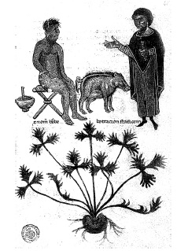

ŞEKİL 1. Hekim, lekeli bir hastayı muayene ederken aşağıda “Ranunculus” (düğünçiçeği) bitkisi görülmekte (Sözde-Apuleius’un şifalı bitkilere ilişkin 14. yüzyıl elyazmasından; Biblioteca Laurenziana, Floransa). 10
Roma döneminde içecek kapları kimi zaman ılgın ağacı (“Tamarix gallica”) odunundan oyularak hazırlanıyordu ve bunun içinde bekletilen içeceğin melankoliye iyi geleceği düşünülüyordu. 16. ve 17. yüzyıllarda buna benzer bir uygulama “Lignum nephriticum” (böbrek odunu) denilen bir ağaç odunundan yapılan içecek kapları ile yeniden canlanmıştır. Bu odun, suya parlak bir mavi fluoresans özellik kazandıran bir bileşen salıyor ve bunun, böbrek hastalıklarının özgül bir ilacı olduğu düşünülüyordu.
Kartaca Generali Hannibal’in (İÖ 247-183) savaşçılarının Bergama Kralı II. Eumenes’e (yön. İÖ 197-159) karşı yaptıkları bir deniz saldırısında olduğu gibi, toprak kaplar içine hapsedilmiş olan ve düşman ordugâhlarına ve gemilerine mancınıklarla atılan zehirli yılanlar, savaşın yönlendirilmesinde etkili olmuştur. Kimyasal bir madde olarak hidrosiyanik asit (HCN) tanınmıyordu ama içinde yer aldığı acıbadem ve şeftali çekirdeğinin zehirli bir madde içerdiği biliniyordu.
Çeşitli maddeler, zararlı böceklerle savaşımda da kullanılıyordu. Örneğin içlerinde şarabın hazırlandığı ve korunduğu kaplar, önceden kükürtle tütsüleniyordu. Üzüm bağlarındaki kelebek zararlısının önüne sıvı yağ, kükürt ve ziftten oluşturulan tütsü ile geçiliyordu. Çin’de İÖ 200’lerde böceklerle savaşımda arsenik kullanılıyordu.
İnsan salyasının zehirli böcek sokmasına, yılan ve vahşi köpek ısırmasına, göz iltihabına karşı ve siğil giderimi için etkili olduğu düşünülmüş ve kimi zaman ilgili yerler yalanarak uygulanmıştır.4
Ampirik çağda “striknin” (kargabüken özü) ya da baldıran otundan (“Conium maculatum”) elde edilen “koniin” (ağılı baldıran ruhu) gibi alkaloitler tanınmıyordu. Onlar ve çoğu ötekiler ancak 19. yüzyılda keşfedilmiş ve saf olarak elde edilmişlerdir. Zamanla daha çok sayıda zehirleyici, sarhoş edici, ateş düşürücü ya da hazmı kolaylaştırıcı maddelerin etkisi tanınmış ve kullanılmıştır.
Putataparlık döneminde Gallia’da (Roma İmparatorluğu’nda Fransa, Belçika ve Kuzey İtalya’yı içine alan bölge) genelde din işleriyle görevlendirilmiş Kelt keşişlerine ya da büyücü-rahiplere “druid” adı veriliyordu. İÖ 3. yüzyıldan beri görülen druidler, rahipliğin yanı sıra öğretmenlik ve yargıçlık gibi işlevler de üstlenmişlerdi. Druidler sihir ve büyü işlerinden başka, şifalı otlar toplayarak bunlardan ilaç hazırlamada da etkili idiler. Hıristiyanlığın yayılmasından sonra druid inançlarını tümüyle ortadan kaldırmak isteyen Hıristiyanlar, druidleri halkın gözünde cadılara dönüştürerek halkı onlara düşman etmeyi başarmışlardır. Kelt dilinde “Druid”, “meşe ağacını bulan / bilen” anlamına gelir. Druidler meşe ormanlarında yaşıyor, bu ağacın üstünde büyüyen ve kendileri için kutsal değer taşıyan ökseotunu (“Viscum album”), ayinler eşliğinde altın bir orakla meşe ağacının gövdesinden topluyor ve bundan her derde deva olduğuna inandıkları bir ilaç hazırlıyorlardı. Bizzat zehirli bir madde olan bu ilacın zehirlenmeye karşı iyi geldiği söyleniyor, ayrıca özellikle doğurganlık kazandırmak üzere kısır hayvanlara bunun özsuyunu içiriyorlardı.11 Ökseotu, sarhoşluk duygusu veren bir bitki olup bir Kuzey Avrupa söylencesine göre, tanrı Loki, baştanrı Odin’in oğlu Balder’i öldürmek için ökseotu kullanmıştır.
Günümüzde Antikçağ eczacılığı ve kimyasına ilişkin olarak az sayıda belge bulunmaktadır. Belgelerin çoğunun yangın, yağma ya da savaş nedeniyle kayıplara karıştığı kabul edilmelidir. Ayrıca Antikçağ eczacıları, gizli kalması düşüncesiyle, yöntem ve reçetelerini ender durumlarda not etmişler ve bilgi aktarımı ağızdan ağza olmuştur. Bilgileri gizli tutma tutumuna aykırı davrananlar yasaya aykırı davranmış sayılarak ölümle cezalandırılmış ve bu uygulama tüm ampirik çağ için belirleyici olmuştur. Bu tutum, günümüzde tekellerin bir aracı olarak “patent” olgusu şeklinde karşımıza çıkmaktadır.8
Cinsel haz ve gücü artırıcı niteliğe sahip olduğuna inanılan maddelere, tanrıça Aphrodite’in adından, “afrodizyak” adı verilir. Mıknatısın demiri çekmesinden esinlenilerek Eskiçağ’da Doğu’da afrodizyak olarak demir tozu ya da yongası yutulduğundan söz edilmektedir. Müslüman gezgin İbn Battûta (1304-1369), afrodizyak olarak demir yongası yutan bir Hint prensinin öldüğünden söz eder. Adamotundan başka “ginseng”in de Uzakdoğu’da afrodizyak olarak kullanıldığı bilinmektedir. Marco Polo (1254-1324), 13. yüzyılda Çin’de, “ginseng”in afrodizyak olarak çok yaygın bir şekilde kullanıldığını belirtmiştir. Günümüzde birçok Avrupa ülkesinin farmakopelerinde kayıtlı olan “ginseng”, genel olarak kansızlığa, şeker hastalığına, uykusuzluğa karşı, bedeni gençleştirici ve cinsel gücü artırıcı olarak kullanılmaktadır. Adamotu zehirli bir bitki olmasına karşılık uygun bir dozda kullanıldığında “cinsel trafiği” olumlu yönde etkilediği bilinmekteydi. Afyon da aynı amaçla kullanılmıştır. Ortaçağ İslâm dünyasında afyon kullanımının çok yaygın olduğu bilinmektedir.
Kimi bölgelerde klitorisin kesilip alınması yoluyla kadınlar da sünnet ediliyordu. Böyle kadınların, cinsel uyarım kaybını telâfi etmeye çalışarak fazla miktarda afyon kullandıkları saptanmıştır. İlkel kabilelerin cinsel birleşme sırasında süründüğü kokulardan, çeşitli kocakarı ilaçlarına kadar afrodizyak olarak kullanılan maddeler çok sayıdadır. Afrika’dan Çin’e yapılan kaçak gergedan boynuzu ticareti de buna yöneliktir.12 Afrodizyak olarak en başarılı reçetenin, Hindistan’da İS 250 yılı dolayında Vatsayana tarafından yazılmış olan Kama Sutra adlı ünlü eserde yer aldığı görülmektedir. Bu reçetede, toz haline getirilmiş beyaz tatula (şeytan otu), “uzun biber” (dâr-ı fülfül, “Piper longum”), karabiber ve bal bulunmaktaydı. Cinsel eylemden önce bu karışım, penise sürülüyor ve böylece “kadın, erkeğe itaatkâr kılınıyordu”. Temas sırasında bu karışım, cinsel organların mukozası tarafından hızla emildiğinden, her iki cinsi de etkiliyordu. Çok düşük dozda biber özütü penise sürüldüğünde kan dolaşımını hızlandırdığından, peniste bir kırmızılaşmanın yanı sıra dikelmeye de yardımcı oluyordu. Karışımda yer alan bal, kayganlaştırıcılığı ve beyaz tatulanın uyarıcı etkinliğini artırıyordu. Akılcı temellere göre eksiksiz olan bu reçetenin, uygulamada da hedeflenen başarıyı sağlayacağı düşünülebilir. Tatula, kenevir gibi uyuşturucu etkiye sahip bir bitki idi. Aynı zamanda zehirli olan tatula Ortaçağ’da cadı ayinlerinde büyücülerin sarhoş olmasında ve büyü ve kehanet işlerinde aracı olarak kullanılırdı. Agave bitkisinden ise Amerikan yerlileri sarhoş edici bir şarap hazırlıyorlardı.13